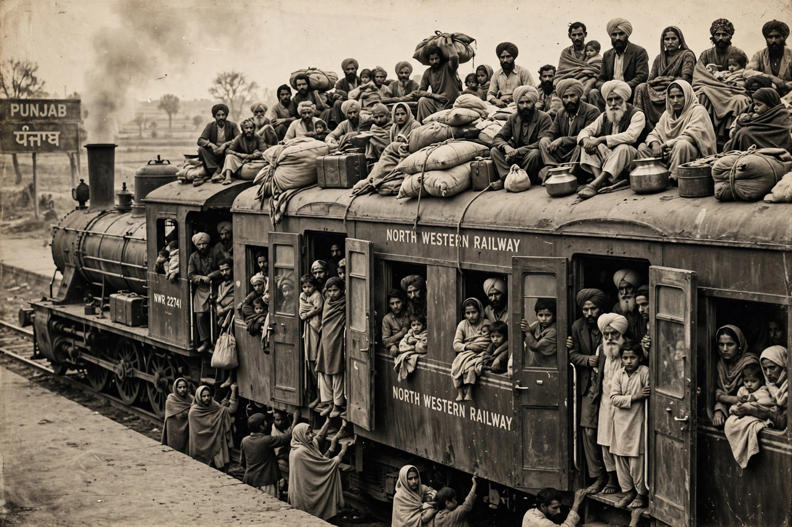

Wikipedia > Partition of India
Partition of India

The Partition of India in 1947 was the division of British India into two independent dominions, India and Pakistan. The partition was accompanied by one of the largest mass migrations in history and by communal violence in which, by most scholarly estimates, between several hundred thousand and two million people were killed and some 10–20 million displaced.
Background
Demands for a separate Muslim state had been pressed by the All-India Muslim League under Muhammad Ali Jinnah since the Lahore Resolution of 1940, based on the "two-nation theory" that Hindus and Muslims were separate nations. The Indian National Congress, led by Jawaharlal Nehru and Mahatma Gandhi, long sought a united independent India, but by 1946–47, amid deadlock and escalating communal violence — including the Calcutta killings of August 1946 — Congress leaders accepted partition. The last viceroy, Lord Mountbatten, brought the transfer of power forward to August 1947.
The division
Under the Indian Independence Act 1947, the provinces of Bengal and Punjab were divided between the two dominions by boundary commissions chaired by Sir Cyril Radcliffe, who had never visited India and had only weeks to draw the lines. The awards were published after independence. Some 560 princely states were advised to accede to one dominion or the other; most did, though disputes over Hyderabad, Junagadh and, most consequentially, Jammu and Kashmir led to conflict. Pakistan emerged in two wings, East and West, separated by more than 1,600 km of Indian territory; East Pakistan became independent Bangladesh in 1971.
Violence and displacement
Punjab and Bengal descended into mass communal killing, abduction and forced conversion as Hindus and Sikhs fled west and Muslims fled east. Trains arrived carrying murdered passengers; tens of thousands of women were abducted, and governments later ran recovery operations for years. Historians characterise the violence in differing terms — some describe episodes as ethnic cleansing or retaliatory genocide — and debate the degree of planning behind it.
Legacy
Partition shaped South Asian politics permanently: India and Pakistan have fought several wars, principally over Kashmir, and both became nuclear powers. The events remain contested in the national memories of all three successor states, and the treatment of minorities, the status of Kashmir and the drawing of the Radcliffe Line are still debated by historians and politicians.
See also: Indian independence movement · Muhammad Ali Jinnah · Kashmir conflict · Bangladesh Liberation War